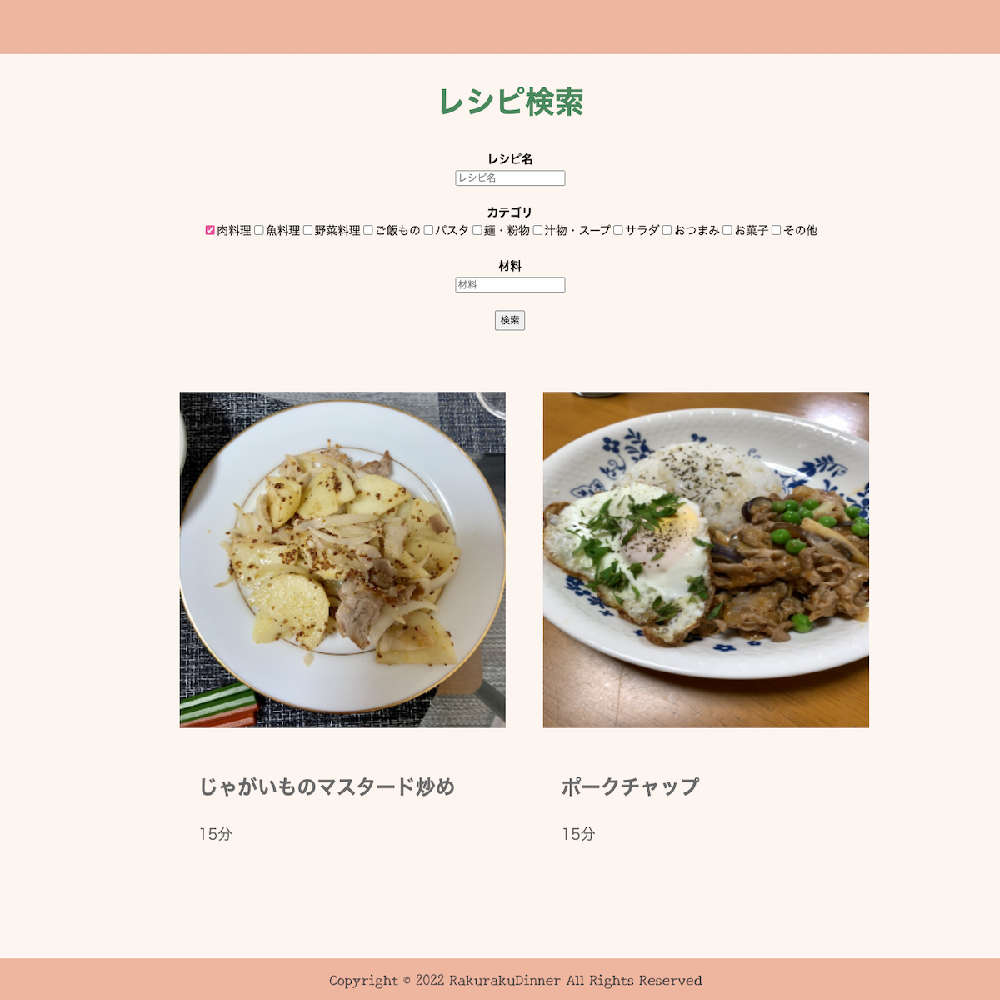
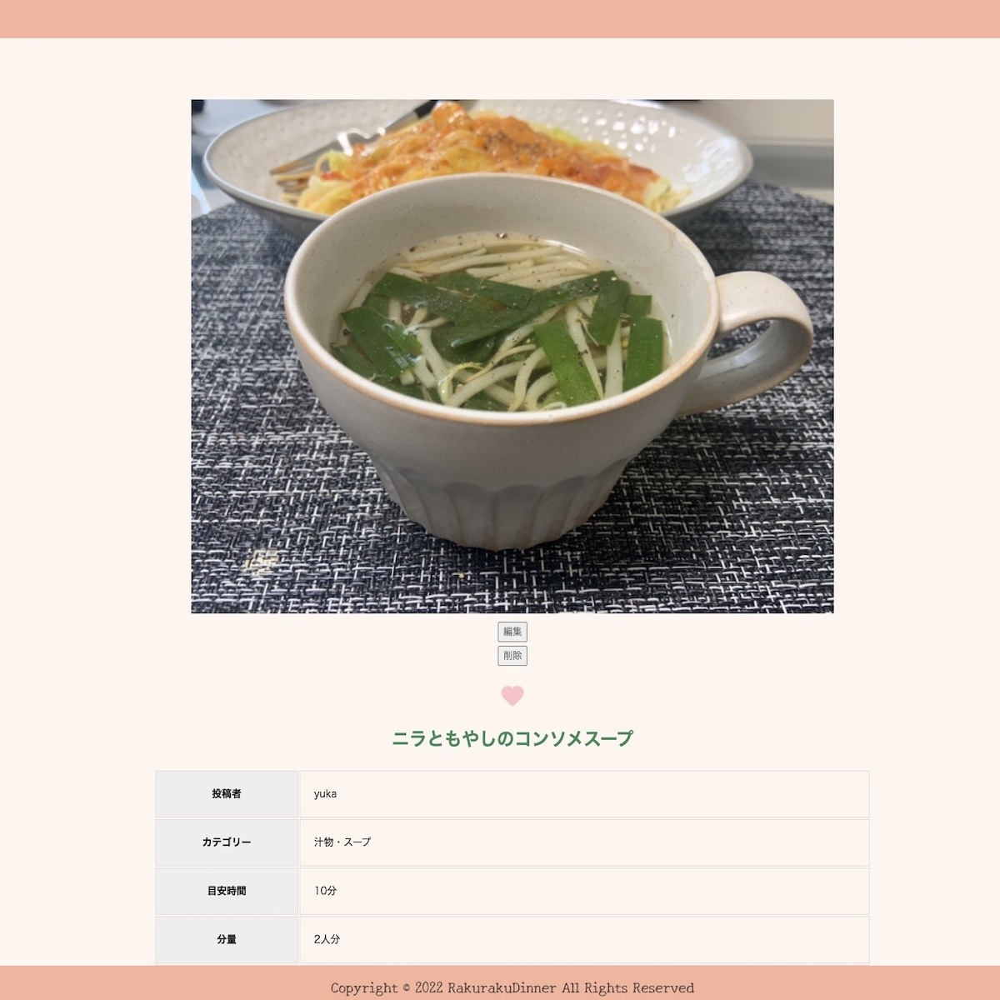

RakurakuDinner（料理レシピ投稿サイト）
開発環境
Ruby / Ruby on Rails / MySQL / GitHub / Heroku / Visual Studio Code
-
概要
制作時間 70時間 URL
https://rakurakudinner-n.herokuapp.com ID admin PASS 2222
画像のリンク切れが起こっている可能性がございます。
-
動作テスト
テスト用アカウント
mail abcd@gmail.com PASS 111aaa
OUTLINEアプリケーションの概要
手軽な料理をシェアし、自分の料理のレパートリーを増やしたり確認したりできるアプリケーションを開発しました。
主な機能は、ユーザー登録機能、および料理レシピ投稿機能、検索機能です。
トップページにアクセスすると、投稿されたレシピ一覧が表示されています。それをクリックすると、材料、作り方などのレシピ詳細を閲覧することができます。
トップページ(一覧ページ）のヘッダーから新規登録を行い、ヘッダー画像右下のプラスボタンから投稿ボタンに遷移します。
投稿画面で写真を添付し、カテゴリ、目安時間、分量をプルダウンから選択します。タイトル、材料、作り方、時短・味付けポイント、応用編（任意）を記載してレシピを投稿できます。
ログインしている場合はトップページのヘッダーにニックネームが表示され、クリックするとマイページに遷移し、レシピのレパートリーを確認できます。
またレシピを検索する際は、ヘッダーのレシピ投稿ボタンを押し、複数条件から調べることができます。
-
開発に至った経緯
自分が料理アプリを使う際、調べただけで作らずに終わってしまい、決まりきったものを作っていることに気がつきました。
課題を分析したところ、調理時間の明記がないこと、自分の料理のレパートリーを整理できていないことが原因であるとわかりました。
これらの問題を解決するために、「仕事終わりでも手軽に作れる」をテーマにレシピ投稿・検索アプリを開発することにしました。
-
開発で工夫したこと
1つ目がレシピ検索機能です。ransackというRuby gemを用い、レシピ名、カテゴリ、材料など複数の条件からレシピを検索できるようにしました。
2つ目が、フロント部分です。 統一感があり見やすく、食欲が湧くような見た目を目指し、色やボタンなどの配置を考え作成しました。
-
今後実装したいと思っていること
1つ目が画像のプレビュー機能です。ユーザーが投稿しやすいようにしていく必要があると考えます。
2つ目が、いいね機能のような作ったよボタンを作り、調理時間やコメントを投稿する機能です。ユーザー同士が交流でき、料理のアイディアを共有できると考えます。